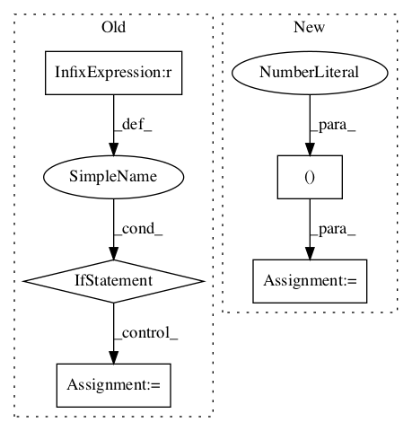

8cdbb1637b140c01f431831e7b2c2a63afc96209,kapre/time_frequency.py,Spectrogram,call,#Spectrogram#Any#,139

Before Change
(output, self._spectrogram_mono(x[:, ch_idx : ch_idx + 1, :])),
axis=self.ch_axis_idx,
)
if self.power_spectrogram != 2.0:
output = K.pow(K.sqrt(output), self.power_spectrogram)
if self.return_decibel_spectrogram:
output = backend_keras.amplitude_to_decibel(output)
return output
After Change
) // (batch, ch, time, freq)
if self.output_data_format == "channels_last":
stfts = tf.transpose(stfts, perm=(0, 2, 3, 1)) // (batch, t, f, ch)
return stfts
In pattern: SUPERPATTERN
Frequency: 3
Non-data size: 5
Instances
Project Name: keunwoochoi/kapre
Commit Name: 8cdbb1637b140c01f431831e7b2c2a63afc96209
Time:
Author: null
File Name: kapre/time_frequency.py
Class Name: Spectrogram
Method Name: call
Project Name: asyml/texar
Commit Name: 99153ad034108b7d0e759fc246cb3d05593ee897
Time:
Author: null
File Name: texar/agents/pg_agent.py
Class Name: PGAgent
Method Name: _train_policy
Project Name: tensorflow/agents
Commit Name: cf51c81221fa9dcb087c8dfe48e313c71bd3dd83
Time:
Author: null
File Name: tf_agents/keras_layers/bias_layer.py
Class Name: BiasLayer
Method Name: build